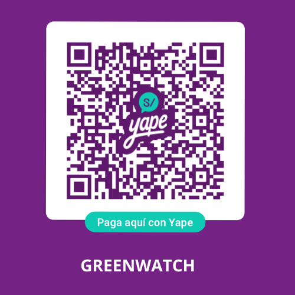

Apoya nuestra causa
Con tu ayuda, GreenWatch puede seguir promoviendo el reciclaje y la sostenibilidad. Tus donaciones nos ayudan a crear más puntos de reciclaje, ofrecer talleres educativos y entregar macetas ecológicas a cambio de materiales reciclables.
Puedes donar a través de nuestro QR de Yape o ponerte en contacto con nosotros para contribuir directamente a nuestras iniciativas ambientales.